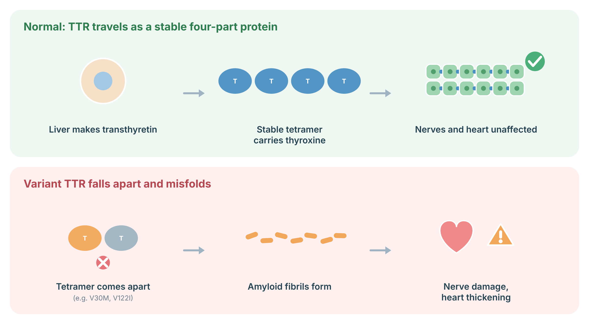

Understanding hATTR
hATTR amyloidosis is caused by a heterozygous TTR variant. Penetrance and age at onset vary by variant and family. V122I (p.Val142Ile), common in people of West African ancestry, mainly causes cardiomyopathy; V30M (p.Val50Met) is a classic neuropathy variant.
Transthyretin (TTR) is made mainly in the liver and travels in blood as a stable four-part protein (tetramer). Disease-causing TTR variants make the tetramer fall apart; the single parts misfold and form amyloid fibrils that deposit in nerves, heart and other organs. Treatments either stabilize the tetramer or lower TTR production in the liver.

Sources: Sekijima Y, Nakamura K. Hereditary Transthyretin Amyloidosis. In: GeneReviews. Seattle (WA): University of Washington. Bookshelf NBK1194; PubMed.
Signs and features
Diagnosis
TTR sequencing identifies the variant. Tissue biopsy or, for the heart, bone-tracer scintigraphy with exclusion of a monoclonal protein, establishes amyloid disease.
- Alnylam Act: hATTR Amyloidosis (Canada) — PreventionGenetics; sponsor: Alnylam Canada. Test: TTR gene testing, with no-charge genetic counselling. Eligibility: Age 18 or older; suspected hATTR or confirmed family history (full criteria on requisition). Program page
No-cost testing paid by the sponsor. Criteria and availability change: confirm eligibility on the current requisition before ordering. Listed for information; not an endorsement.
Management
Care through an amyloidosis clinic.
Genetic counselling
Each child of an affected person has a 1 in 2 chance of inheriting the variant. Predictive testing of adult relatives is offered once the family variant is known. Carriers are usually monitored from about 10 years before the age of onset seen in the family.